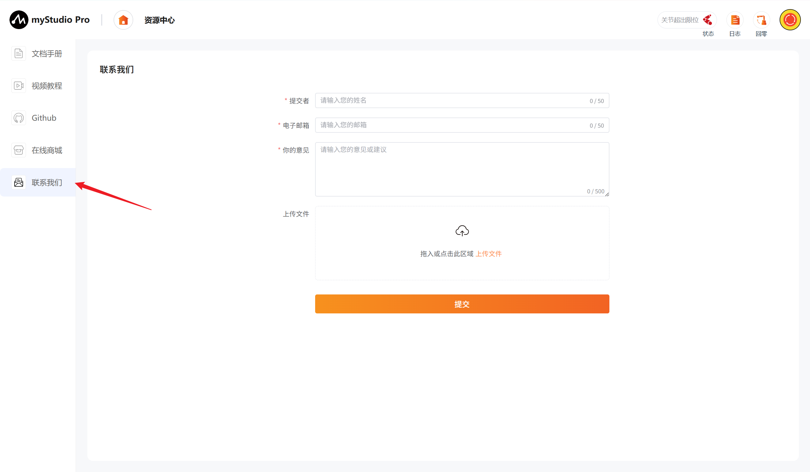
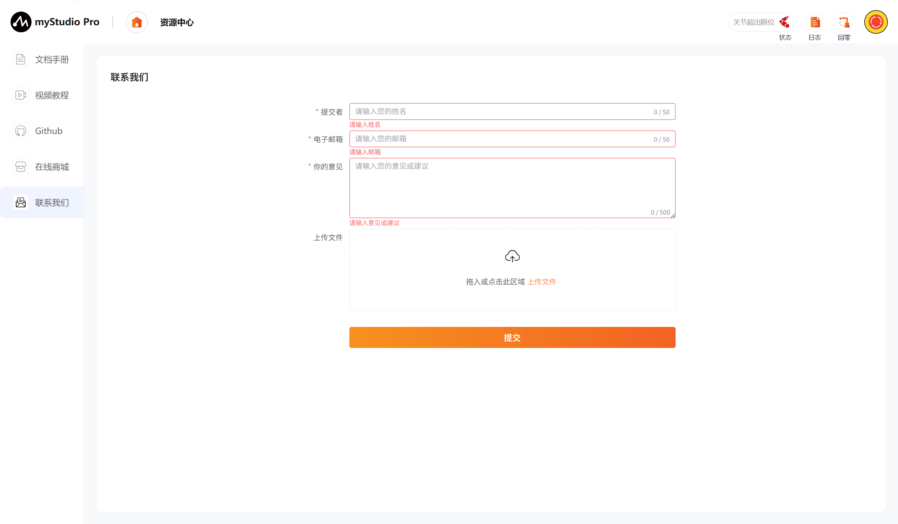
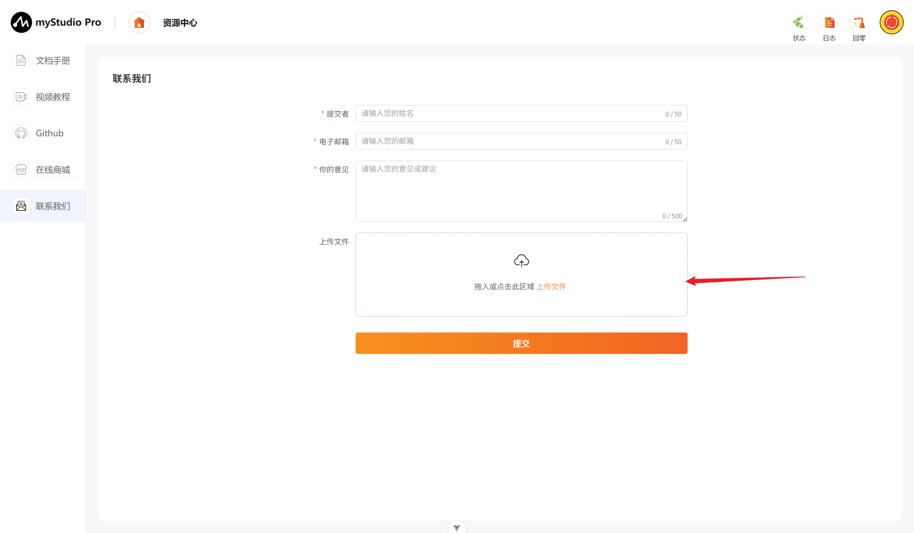
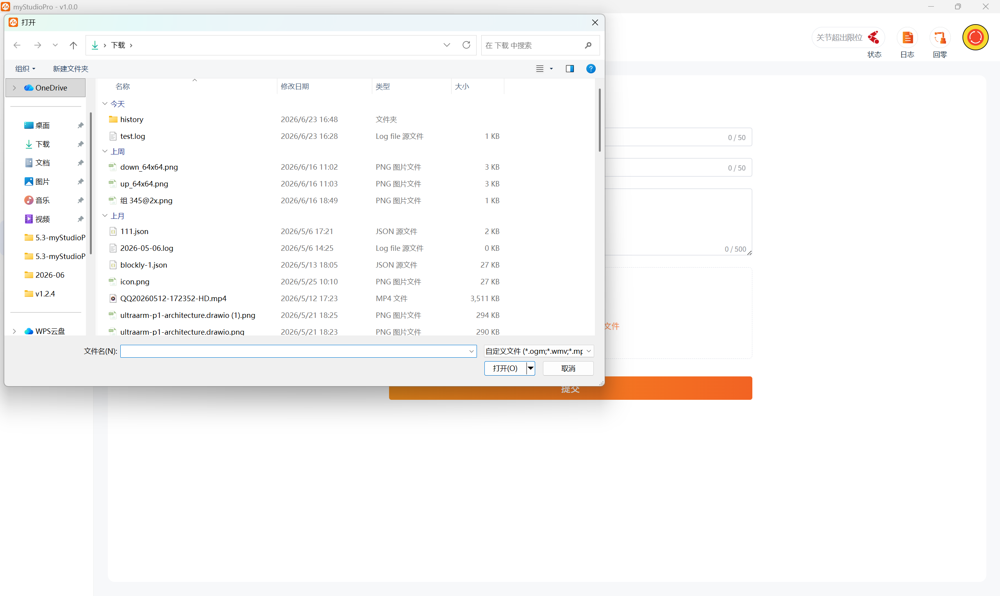
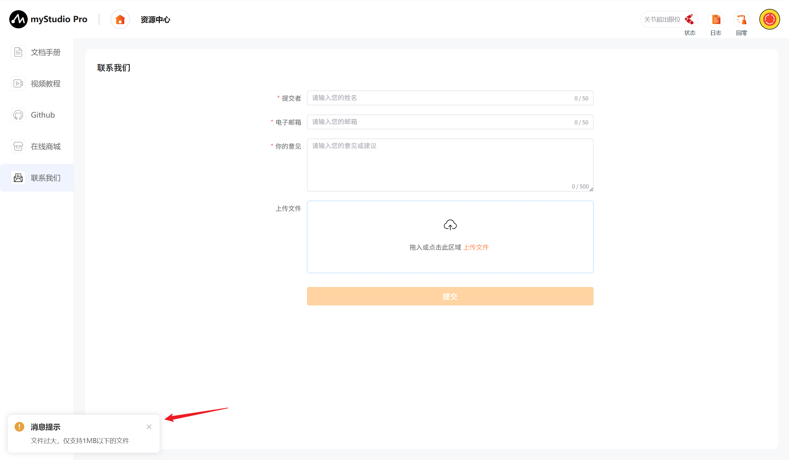
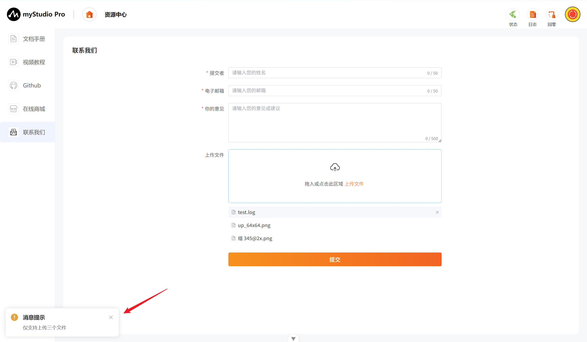
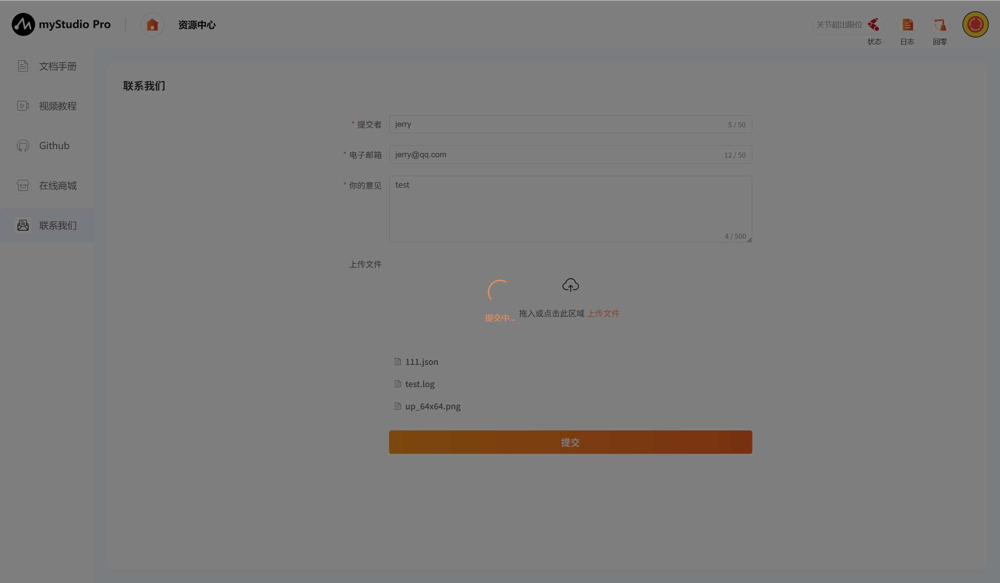
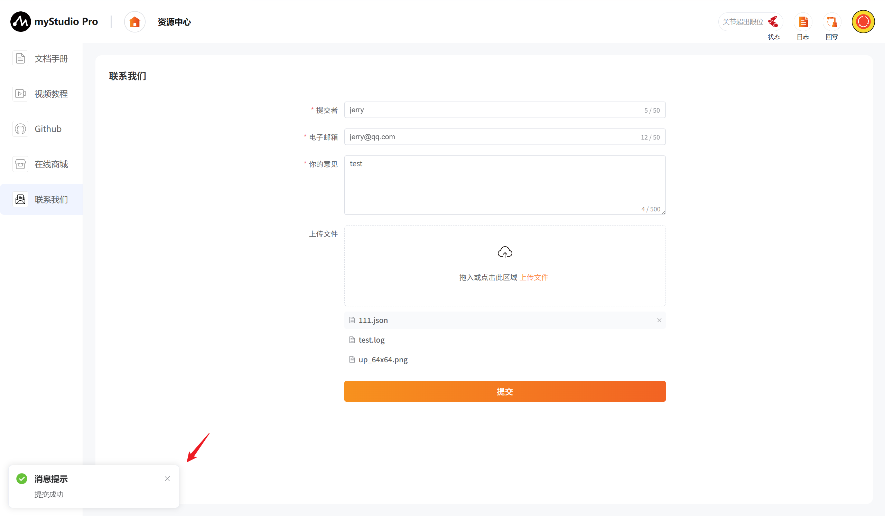

资源中心
1 界面介绍
首页如下图：
资源中心主界面提供五大功能入口：文档手册、视频教程、Github 开源资源、在线商城以及联系我们。用户可在此页面快速访问产品相关资料、视频教程以及官方开源代码。
| 序号 | 功能介绍 |
|---|---|
| 1 | 文档手册：查看产品使用手册与开发指南 |
| 2 | 视频教程：观看产品操作与编程教学视频 |
| 3 | Github：跳转至官方 Github 或 Gitee 开源仓库 |
| 4 | 在线商城：跳转至淘宝或京东官方购买页面 |
| 5 | 联系我们：提交问题或建议，支持上传附件 |
2 文档手册
正在编写中
3 视频教程
正在编写中
4 Github
此功能为网页跳转链接，点击以后，会在当前使用浏览器上打开官方Github或者官方Gitee。
5 在线商城
此功能为网页跳转链接，点击以后，会在当前使用浏览器上打开对应产品的购买界面，可前往淘宝或京东。
6 联系我们
如果你有任何的问题或者想法，可以通过这里来联系我们。

功能介绍：
提交者
这里可以输入您的昵称
此处是必填项，如果你不填直接提交，会有对应文字提示您。
电子邮箱
这里可以输入您的电子邮箱
此处是必填项，这里可以输入你的邮箱地址，方便官方人员后续回复您，如果你不填直接提交，会有对应文字提示您。
您的意见
这里可以输入您的意见
此处是必填项，这里可以输入您的问题或者想法，如果你不填直接提交，会有对应文字提示您。

上传
点击此按钮和可拖拽区域，可以上传文件，最多上传3个文件，并且每个文件不得超过1M。

点击以后会弹窗以供选择文件。

如果你选中的文件大小超过1M，在点击"打开"以后，会打开失败，并且弹窗提示你文件过大。

当你要上传的文件数量超过3个时，会弹窗提示你。

注意：上传的文件仅支持.log、.json、视频文件和图片文件
提交
点击提交按钮，可以将所有信息进行提交，该步骤需要的时间可能较长，请您耐心等待

